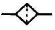
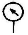
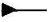
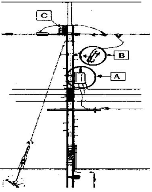

굴삭기운전기능사 (2010-01-31 기출문제)
1. 기관에 사용되는 윤활유의 소비가 증대될 수 있는 두 가지 원인은?
- 연소와 누설
- 비산과 압력
- 회석과 혼합
- 비산과 회석
(정답률: 86%)

2. 디젤기관의 진동 원인과 가장 거리가 먼 것은?
- 각 실린더의 분사압력과 분사량이 다르다.
- 분사시기, 분사간격이 다르다.
- 윤활 펌프의 유압이 높다.
- 각 피스톤의 중량차가 크다.
(정답률: 65%)
3. 4행정 사이클 기관에서 엔진이 4000rpm일 때 분사펌프의 회전수는?
- 4000rpm
- 2000rpm
- 8000rpm
- 1000rpm
(정답률: 61%)
4. 디젤기관에서 타이머의 역할로 가장 적합한 것은?
- 분사량 조절
- 자동 변속 단 조절
- 연료 분사시기 조절
- 기관속도 조절
(정답률: 81%)
5. 기관에서 열효율이 높다는 것은?
- 일정한 연료 소비로서 큰 출력을 얻는 것이다.
- 연료가 완전 연소하지 않는 것이다.
- 기관의 온도가 표준 보다 높은 것이다.
- 부조가 없고 진동이 적은 것이다.
(정답률: 87%)
6. 피스톤의 운동 방향이 바뀔 때 실린더 벽에 충격을 주는 현상 을 무엇이라고 하는가?
- 피스톤 스틱(stick) 현상
- 피스톤 슬랩(slap) 현상
- 블로바이(blow by) 현상
- 슬라이드(slide) 현상
(정답률: 68%)
7. 일상 점검정비 작업 내용에 속하지 않는 것은?
- 엔진 오일량
- 브레이크액 수준 점검
- 라디에이터 냉각수량
- 연료 분사노줄 압력
(정답률: 80%)
8. 냉각장치에서 냉각수의 비등점을 올리기 위한 것으로 맞는 것은?
- 진공식 캡
- 압력식 캡
- 라디에이터
- 물재킷
(정답률: 63%)
9. 윤활장치에서 오일여과기의 역할은?
- 오일의 역순환 방지 작용
- 오일에 필요한 방청 작용
- 오일에 포함된 불순물 제거 작용
- 오일 계통에 압속 작용
(정답률: 84%)
10. 기관에서 워터펌프의 역할로 맞는 것은?
- 정온기 고장 시 자동으로 작동하는 펌프이다.
- 기관의 냉각수 온도를 일정하게 유지한다.
- 기관의 냉각수를 순환 시킨다.
- 냉각수 수온을 자동으로 조절한다.
(정답률: 66%)
11. 디젤기관 연료계통에 응축수가 생기면 시동이 어렵게 되는데 이 응축수는 주로 어느 계절에 가장 많이 생기는가?
- 봄
- 여름
- 가을
- 겨울
(정답률: 86%)
12. 터보차저에 대한 설명으로 틀린 것은?
- 흡기관과 배기관 사이에 설치된다.
- 과급기라고도 한다.
- 배기가스 배출을 위한 일종의 블로워(blower)이다.
- 기관 출력을 증가시킨다.
(정답률: 76%)
13. 교류 발전기에서 회전체에 해당하는 것은?
- 스테이터
- 브러시
- 엔드프레임
- 로터
(정답률: 62%)
14. 트랜지스터에 대한 일반적인 특성으로 틀린 것은?
- 고온, 고전압에 강하다.
- 내부전압 강하가 적다.
- 수명이 길다.
- 소형 경량이다.
(정답률: 44%)
15. 기동 전동기의 브러시는 본래 길이의 얼마 정도 마모되면 교환하는가?
- 1/2 이상 마모되면 교환
- 1/3 이상 마모되면 교환
- 2/3 이상 마모되면 교환
- 3/4 이상 마모되면 교환
(정답률: 51%)
16. 건설기계 운전 중 완전 충전된 축전지에 낮은 충전율로 충전이 되고 있을 경우 맞는 것은?
- 충전장치가 정상이다.
- 전압설정을 재조정해야 한다.
- 전류설정을 재조정해야 한다.
- 전해액 비중을 재조정한다.
(정답률: 48%)
17. 퓨즈의 용량 표기가 맞는 것은?
- M
- A
- E
- V
(정답률: 77%)
18. 전해액의 빙점은 그 전해액의 비중이 내려감에 따라 어떻게 되는가?
- 낮은 곳에 머문다.
- 낮아진다.
- 변화가 없다.
- 높아진다.
(정답률: 54%)
19. 기중기에 사용되는 와이어로프의 마모가 빠른 이유로서 가장 거리가 먼 것은?
- 로프 자체에 급유 부족
- 서브의 베어링 급유 불충분으로 마모가 심할 때
- 드럼에 흐트러져 감길 때
- 로프를 감는 드럼을 회전시키는 클러치가 슬립이 많을 때
(정답률: 43%)
20. 타이어식 로더가 트럭에 적재할 때 덤핑 크리어린스를 올바르게 설명한 것은?
- 덤핑 크리어런스가 있으면 안 된다.
- 후진 시 덤핑 크리어런스가 필요한 것이다.
- 덤핑 크리어런스는 적재함보다 높아야 한다.
- 무조건 낮은 것이 좋다.
(정답률: 57%)
21. 굴삭기의 조종레버 중 굴삭작업과 직접 관계가 없는 것은?
- 버킷 제어레버
- 붐 제어레버
- 암(스틱) 제어레버
- 스윙 제어레버
(정답률: 72%)
22. 무한궤도식 건설기계에서 트랙의 스프로킷이 이상 마모되는 원인으로 가장 적절한 것은?
- 트랙의 이완
- 릴리프 밸브 고장
- 댐퍼 스프링의 장력 약화
- 오일펌프 고장
(정답률: 56%)
23. 토크컨버터의 설명 중 맞는 것은?
- 구성품 중 펌프(임펠러)는 변속기 입력축과 기계적으로 연결 되어 있다.
- 펌프, 터빈 스테이터 등이 상호 운동을 하여 회전력을 변환 시킨다.
- 엔진속도가 일정한 상태에서 장비의 속도가 줄어들면 토크 는 감소한다.
- 구성품 중 터빈은 기관의 크랭크축과 기계적으로 연결 되어 구동된다.
(정답률: 45%)
24. 수동 변속기가 설치된 건설기계에서 클러치가 미끄러지는 원인과 가장 거리가 먼 것은?
- 클러치 페달 자유간극 과소
- 압력판의 마멸
- 클러치판의 오일 부착
- 클러치판의 런아웃 과다
(정답률: 33%)
25. 타이어식 건설기계장비에서 조향 핸들의 조작을 가볍고 원활하게 하는 방법과 가장 거리가 먼 것은?
- 동력조향을 사용한다.
- 바퀴의 정렬을 정확히 한다.
- 타이어의 공기압을 적정 압으로 한다.
- 종감속 장치를 사용한다.
(정답률: 64%)
26. 지게차에서 화물취급 방법으로 틀린 것은?
- 포크는 화물의 받침대 속에 정확히 들어갈 수 있도록 조작한다.
- 운반물을 적재하여 경사지를 주행할 때는 짐이 언덕 위로 향하도록 한다.
- 포크를 지면에서 약 800mm 정도 올려서 주행해야 한다.
- 운반 중 마스트를 뒤로 약 6°정도 경사시킨다.
(정답률: 72%)
27. 도로교통법상 정차 및 주차의 금지 장소로 틀린 것은?
- 건널목의 가장자리
- 교차로의 가장자리
- 횡단보도로부터 10m 이내의 곳
- 버스정류장 표시판으로부터 20m 이내의 장소
(정답률: 65%)
28. 검사대행자 지정을 받고자 할 때 신청서에 첨부할 사항이 아닌 것은?
- 검사 업무 규정안
- 시설 보유 증명서
- 기술자 보유 증명서
- 장비 보유 증명서
(정답률: 31%)
29. 고속도로가 아닌 편도 4차로의 도로에서 지게차가 주행하는 차로는?
- 2차로, 3차로
- 3차로
- 3차로, 4차로
- 4차로
(정답률: 86%)
30. 과실로 경상 6명의 인명피해를 입힌 건설기계를 조종한자의 처분기준은?
- 면허효력정지 10일
- 면허효력정지 20일
- 면허효력정지 30일
- 면허효력정지 60일
(정답률: 60%)
31. 신호등에 녹색 등화시 차마의 통행방법으로 틀린 것은?
- 차마는 다른 교통에 방해되지 않을 때에 천천히 우회전 할 수 있다.
- 차마는 직진 할 수 있다.
- 차마는 비보호 좌회전 표시가 있는 곳에서는 언제든지 좌회전을 할 수 있다.
- 차마는 좌회전을 하여서는 아니 된다.
(정답률: 64%)
32. 눈이 20mm 미만 쌓인 때는 최고속도의 얼마로 감속운행 하 여야 하는가?
- 100분의 50
- 100분의 40
- 100분의 30
- 100분의 20
(정답률: 58%)
33. 도로교통법상 술에 취한 상태의 기준으로 맞는 것은?(관련 규정 개정전 문제로 여기서는 기존 정답인 3번을 누르면 정답 처리됩니다. 자세한 내용은 해설을 참고하세요.)
- 혈중 알콜농도 0.01% 이상을 기준으로 함
- 혈중 알콜농도 0.02% 이상을 기준으로 함
- 혈중 알콜농도 0.⑤% 이상을 기준으로 함
- 혈중 알콜농도 0.1% 이상을 기준으로 함
(정답률: 79%)
34. 건설기계 등록번호표 제작 등을 할 것을 통지하거나 명령하여야 하는 것에 해당 되지 않는 것은?
- 신규 등록을 하였을 때
- 등록이전 신고를 받을 때
- 등록번호표의 재 부착 신청이 없을 때
- 등록번호의 식별이 곤란한 때
(정답률: 73%)
35. 다음 중 건설기계 중에서 수상 작업용 건설기계에 속하는 것은?
- 준설선
- 스크레이퍼
- 골재살포기
- 쇄석기
(정답률: 63%)
36. 건설기계정비업의 사업범위에서 유압장치를 정비할 수 없는 정비업은?
- 종합 건설기계 정비업
- 부분 건설기계 정비업
- 원동기 정비업
- 유압 정비업
(정답률: 77%)
37. 유압회로에서 압력제어 밸브 종류가 아닌 것은?
- 압력조절 밸브
- 스로틀 밸브
- 릴리프 밸브
- 시퀸스 밸브
(정답률: 53%)
38. 오일의 무게를 맞게 계산한 것은?
- 부피[L]에다 비중을 곱하면 kgf가 된다.
- 부피[L]에다 질량을 곱하면 kgf가 된다.
- 부피[L]에다 비중을 나누면 kgf가 된다.
- 부피[L]에다 질량을 나누면 kgf가 된다.
(정답률: 47%)
39. 유압·공기압 도면기호에서 유압(동력)원의 기호 표시는?



(정답률: 50%)
40. 유압기계의 장점이 아닌 것은?
- 속도제어가 용이하다.
- 에너지 축적이 가능하다.
- 유압장치는 점검이 간단하다.
- 힘의 전달 및 증폭이 용이하다.
(정답률: 69%)
41. 유압 실린더에서 실린더의 과도한 자연 낙하 현상이 발생될 수 있는 원인이 아닌 것은?
- 작동 압력이 높을 때
- 실린더내의 피스톤 실링의 마모
- 컨트롤 밸브 스풀의 마모
- 릴리프 밸브의 조정불량
(정답률: 61%)
42. 유량 제어 밸브가 아닌 것은?
- 속도제어 밸브
- 체크 밸브
- 교축 밸브
- 급속배기 밸브
(정답률: 35%)
43. 오일 탱크에 관련된 설명으로 가장 적합하지 않는 것은?
- 유압유 오일을 저장한다.
- 흡입구와 리턴구는 최대한 가까이 설치한다.
- 탱크 내부에는 격판(배플 플레이트)을 설치한다.
- 흡입 스트레이너가 설치되어 있다.
(정답률: 71%)
44. 맥동적 토출을 하지만 다른 펌프에 비해 일반적으로 최고압 토출이 가능하고. 펌프효율에서도 전압력 범위가 높은 펌프는?
- 피스톤 펌프
- 베인 펌프
- 나사 펌프
- 기어 펌프
(정답률: 65%)
45. 유압유에 점도가 서로 다른 2종류의 오일을 혼합하였을 경우에 대한 설명으로 맞는 것은?
- 오일 첨가제의 좋은 부분만 작동하므로 오히려 더욱 좋다.
- 점도가 달리지나 사용에는 전혀 지장이 없다.
- 혼합은 권장 사항이며, 사용에는 전혀 지장이 없다.
- 열화 현상을 촉진시킨다.
(정답률: 78%)
46. 유압 모터의 장점으로 틀린 것은?
- 제어가 용이하다.
- 소형 장치로 큰 출력을 낼 수 있다.
- 무단변속이 가능하다.
- 먼지나 이물질에 의한 고장 우려가 없다.
(정답률: 78%)
47. 적재물이 차량의 적재함 밖으로 나올 때는 어떤 색으로 위험 표시를 하는가?
- 녹색
- 청색
- 황색
- 적색
(정답률: 77%)
48. 수공구 사용 시에 안전 및 유의사항으로 틀린 것은?
- 수공구 사용 시 올바른 자세로 사용할 것
- 사용할 때는 무리한 힘이나 충격을 가하지 말 것
- 작업에 맞는 공구를 선택 사용할 것
- 사용한 후 물로 깨끗이 세척해서 보관할 것
(정답률: 88%)
49. 벨트를 풀리에 걸 때는 어떤 상태에서 걸어야 하는가?
- 회전을 중지시킨 후 건다.
- 저속으로 회전시키면서 건다.
- 중속으로 회전시키면서 건다.
- 고속으로 회전시키면서 건다.
(정답률: 86%)
50. 크레인으로 하물을 운반할 때 주의할 사항으로 올바르지 못한 것은?
- 시선은 반드시 하물만을 주시한다.
- 적재물이 추락하지 않도록 한다.
- 규정 무게보다 초과하여 적재하지 않는다.
- 하물이 흔들리지 않게 유의한다.
(정답률: 88%)
51. 세척작업 중에 알칼리 또는 산성. 세척유가 눈에 들어갔을 경우에 응급처치로 가장 먼저 조치하여야 하는 것은?
- 산성 세척유가 눈에 들어가면 병원으로 후송하여 알칼리성으로 중화시킨다.
- 알칼리성 세척유가 눈에 들어가면 붕산수를 구입하여 중화 시킨다.
- 눈을 크게 뜨고 바람 부는 쪽을 향해 눈물을 흘린다.
- 먼저 수돗물로 씻어낸다.
(정답률: 77%)
52. 감전 위험이 많은 작업현장에서 보호구로 가장 적절한 것은?
- 보호 장갑
- 로프
- 구급용품
- 보안경
(정답률: 87%)
53. 가스용접의 안전작업으로 적합하지 않은 것은?
- 산소누설 시험은 비눗물을 사용한다.
- 토치 끝으로 용접물의 위치를 바꾸거나 재를 제거하면 안 된다.
- 토치에 점화할 때 성냥불과 담뱃불로 사용하여도 된다.
- 산소 붐베와 아세틸렌 봄베 가까이에서 불꽃 조정을 피한다.
(정답률: 85%)
54. 보통화재라고 하며 목재, 종이 등 일반 가연물의 화재로 분류되는 것은?
- A급 화재
- B급 화재
- C급 화재
- D급 화재
(정답률: 82%)
55. 작업 시 안전사항으로 준수해야 할 사항 중 틀린 것은?
- 대형 물건을 기중 작업할 때는 서로 신호에 의거할 것
- 고장 중의 기기에는 표지를 할 것
- 정전 시는 반드시 스위치를 끊을 것
- 다른 용무가 있을 때는 기기 작동을 자동으로 조정하고 자 리를 비울 것
(정답률: 88%)
56. 스패너 사용 방법 설명으로 틀린 것은?
- 스패너와 너트가 맞지 않으면 쐐기를 넣어 맞추어 쓴다.
- 스패너를 해머 대신에 사용하여서는 안 된다.
- 스패너에 파이프를 끼워 사용하지 않는다.
- 스패너는 볼트·너트에 잘 결합하고 앞으로 잡아당길 때 힘이 걸리도록 한다.
(정답률: 83%)
57. 도시가스로 사용하는 LNG(액화천연가스)의 특징에 대한 설명으로 틀린 것은?
- 공기보다 가벼워 가스 누출 시 위로 올라간다.
- 공기보다 무거워 소량 누출 시 밑으로 가라않는다.
- 공기와 혼합되어 폭발범위에 이르면 점화원에 의하여 폭발한다.
- 도시가스 배관을 통하여 각 가정에 공급되는 가스이다.
(정답률: 58%)
58. 건설기계가 고압전선에 근접 또는 접촉함으로써 가장 많이 발생될 수 있는 사고 유형은?
- 감전
- 화재
- 화상
- 절전
(정답률: 87%)
59. 다음 그림에서 A는 배전선로에서 전압을 변환하는 기기이다. A의 명칭으로 맞는 것은?

- 컷아웃스위치(COS)
- 주상변압기(P.Tr)
- 아킹혼(Arcing horn)
- 현수 애자
(정답률: 69%)
60. 도시가스배관을 지하에 매설할 경우 상수도관 등 다른 사설 물과의 이격 거리는 얼마 이상 유지해야 하는가?
- 10cm
- 30cm
- 60cm
- 100cm
(정답률: 56%)
- 누설: 기관 내부에서 윤활유가 누설될 경우, 필요 이상으로 많은 양의 윤활유가 소비될 수 있습니다. 또한 누설된 윤활유는 환경 오염의 원인이 될 수 있습니다.